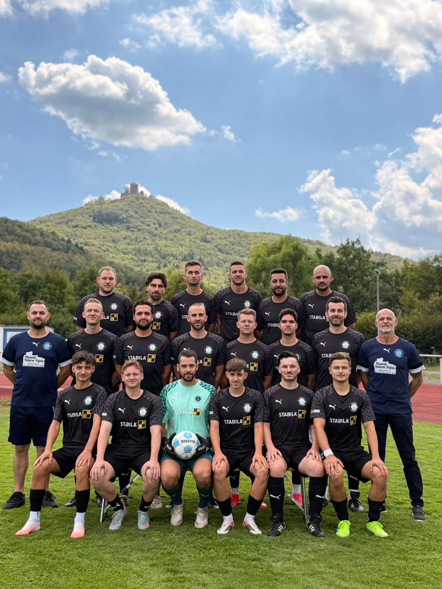

Vorstellung HerrenTrainingszeiten
Dienstag & Donnerstag19 Uhr
Herrenfußball in Annweiler
Willkommen im Herrenteam
Bei uns findest Du ein eingespieltes Team, ehrgeizigen Trainingsbetrieb und einen starken Zusammenhalt sowohl auf als auch neben dem Platz.
 Steven Göttge
Steven Göttge

 Udo Memmer
Udo Memmer
 Melanie Leiser
Melanie Leiser
 Hans Jürgen Deschler
Hans Jürgen Deschler